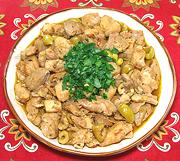

|
Chicken Stewed with OlivesSpain - Andalucia - Pollo con Aceitunas | ||||
| Serves: Effort: Sched: DoAhead: |
4 main *** 1-1/2 hrs Yes |
From the Spanish province of Andalucia, Moorish Al-Andalus, this chicken stew with olives is similar to a dish made across the straits in Morocco. Of course, they can't flavor theirs with brandy and wine. | |||
|
|
2-1/2 6 10 1 1/2 1/4 2-1/2 2 2/3 3 1/3 2/3 1/3 |
# oz oz cl t t oz T c T c t t |
Chicken meat (1) Onion Tomatoes Garlic Thyme, dried Fennel seed Olives (2) Olive Oil Sherry (3) Brandy Stock Salt Pepper |
Prep - (25 min)
|
dmc_chkolv1 141212 stc170 - www.clovegarden.com
©Andrew Grygus - info@clovegarden.com - linking to
and non-commercial use of this page permitted